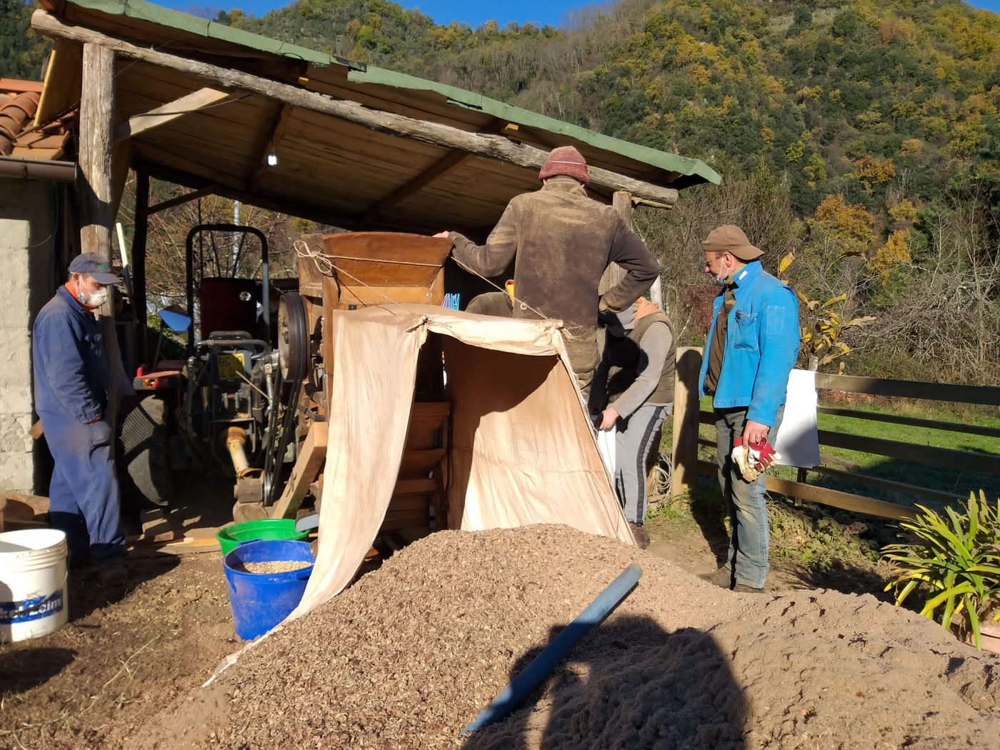

Langsame Prozesse,
wie es die Natur gebietet.
Es ist nicht nur Mehl. Es ist das Ergebnis von vierzig Tagen Rauch, dem Schlag einer Mühle und der Stille der Apennin-Wälder.

Vom Wald in den Metato
Der Metato ist ein zweistöckiges Steingebäude. Hier werden die Kastanien auf einem Holzrost ausgebreitet, während im Erdgeschoss ein langsames Feuer aus Kastanienholz und Schalen brennt.
Vierzig Tage Geduld. Der Rauch umhüllt jede Frucht und trocknet sie langsam, ohne sie zu garen. Es ist eine Alchemie aus konstanter Hitze und aromatischem Rauch, die dem Mehl seinen leicht gerösteten, einzigartigen Nachgeschmack verleiht.

Das Ritual des Feuers
„Die Flamme darf den Rost nie berühren. Es ist die Wärme der Waldseele, die die Frucht verwandelt.“
Die optische Sortierung
Zwischen Trocknung und Mahlung durchläuft jede Kastanie einen technologisch fortschrittlichen optischen Sortierer. Hochauflösende Kameras und Analysealgorithmen sortieren in Echtzeit jede defekte, dunkle, wurmstichige oder nicht perfekt getrocknete Frucht aus.
Hier treffen Bauerntradition und Technologie aufeinander: das alte Wissen des Metato und das digitale Auge, das den Käufern nur die besten Kastanien garantiert. Keine Überraschungen im Beutel — nur das Beste der Ernte.

Nur die perfekte Frucht erreicht die Mühle.

Zertifizierung
Garantierte Kaltvermahlung, um die Enzyme zu erhalten.
Der Steinmahl
Nach der optischen Sortierung werden die Kastanien zur Mühle gebracht. Die großen Steine aus lokalem Gestein, von Hand restauriert, drehen sich langsam wie es die Tradition verlangt.
Anders als Industriemühlen erhitzt der Stein das Mehl nicht. Die Körnung bleibt unregelmäßig, „lebendig“, voller Öle und Düfte, die die Hitze maschineller Mahlung zerstören würde.
„Was eine Maschine in einer Stunde schafft, schafft der Metato in vierzig Tagen. Den Unterschied schmeckst du.“
Details, die den Unterschied machen

Manuelles Sieben
Jeder Beutel wird von Hand kontrolliert, um absolute Reinheit zu garantieren.
100% Natürlich
Kein Dünger, nur der Humus des Unterholzes.
Optische Sortierung
Technologisch fortschrittlicher optischer Sortierer: Aussortiert jede defekte Frucht vor der Mahlung.
Ethische Verpackung
Sack aus Recyclingpapier mit Naturschnur vernäht.
Was du heute tun kannst.
Der Kastanienhain rettet sich nicht von allein. Zwei Minuten genügen, um etwas zu bewirken.
Spende per Überweisung
Schon 10 € bezahlen eine Stunde Arbeit im Wald. Eine freie Spende per Überweisung dauert nur zwei Minuten.
Jetzt spendenAdoptiere einen Kastanienbaum
Für 99 € trägt ein jahrhundertealter Kastanienbaum deinen Namen: Urkunde, Fotos und die Ernte deines Baumes.
Werde PateBesuche uns
Schreib uns auf WhatsApp, um den Hain zu besuchen, oder erzähle deinen Liebsten vom Projekt: auch Weitersagen rettet Bäume.
Auf WhatsApp schreiben